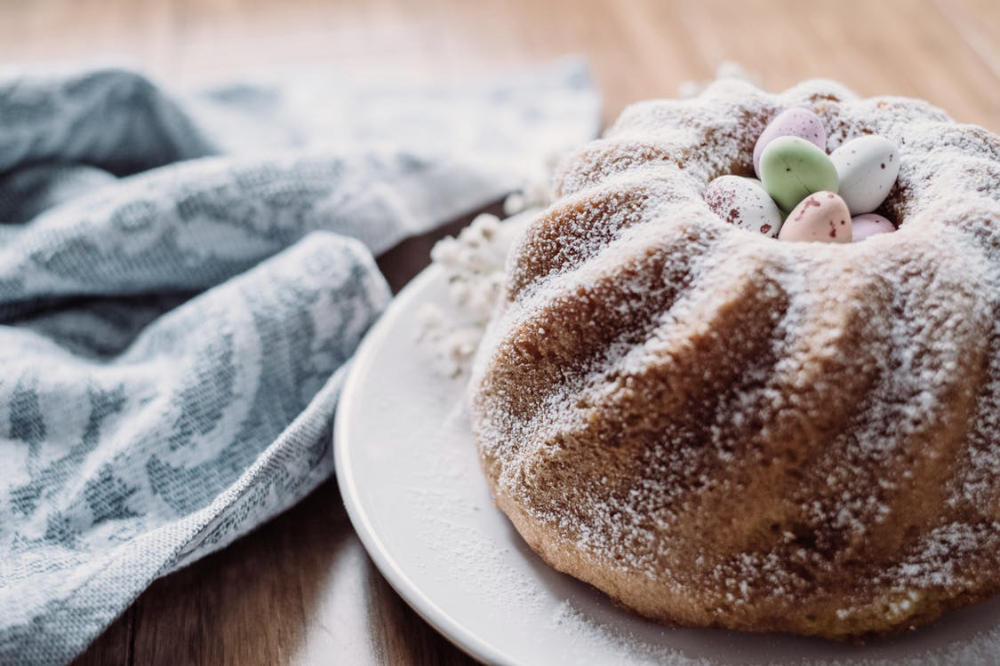

Tasty & Fresh
Bakery
Tasty & Fresh
Bakery
Tasty & Fresh
Bakery
Tasty & Fresh
Bakery
Our Bakery offers classic, scratch-made baked goods for every occasion.
We believe in the goodness of real food, made from scratch. We source only the finest ingredients and hand-craft our baked goods daily.
Our bakery and store-front hours are Monday-Friday 8:30-6:00pm and Saturday’s 10:00-2:00pm. Our phone and order hours are Monday-Friday 8:30-3:00pm and Saturday’s 10:00-2:00pm. Whether you are searching for a special
birthday cake or simply looking for a sweet ending to an everyday meal, The Cake Shop offers something for everyone. This is a one of a kind bakery, where the aroma of home-style baking weakens even the strongest
will.


Today's Menu
18th May 2018 Delight in three layers of cake paired with two generous layers of filling. DeEtta's uses real buttercream, offers a variety of flavors and fillings, and tailors everything — from taste to design — to your personal preferences.
Visit Our Online Shop
The Cake Shop offers something for everyone. This is a one of a kind bakery, where the aroma of home-style baking weakens even the strongest will. The Cake Shop offers a wide variety of freshly baked goods daily; gourmet cookies, fresh apple cake, cheesecake slices, chocolate eclairs, strawberry torte, pound cake, lemon bars, decadent brownies, shortbread, and over 20 flavors of cupcakes that no one can resist.
There is nothing like the aroma and taste of freshly-baked bread. We use traditional methods (without additives or preservatives) to ensure the best taste and quality possible. You can find us working in the wee hours of
the morning mixing, kneading, and making each loaf by hand.


Our Contact
Tuesday 6:30AM – 6:00PM
Wednesday 6:30AM – 6:00PM
Thursday 6:30AM – 6:00PM
Friday 6:30AM – 6:00PM
Saturday 6:30AM – 2:00PM
Sunday 8:00AM - 12:00PM
Monday CLOSED
